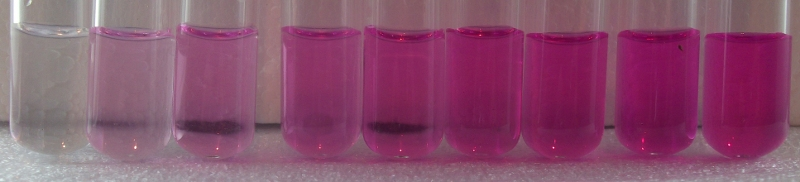

Greiss Assay¶

Reagents & Equipment¶
- Colorimeter
- Cuvettes with caps (preferably semi-macro cuvettes)
- Sulfanilamide, Sigma Cat # S9251-100G
- 3M HCl, Carolina Cat # 867861
- NED (N-1-napthylethylene diamine dihydrochloride), Sigma Cat # 33461-5G
- 1 mL and 100 uL variable pipettes
- 2 x small amber storage bottles
- Analytical balance
- Distilled water
Colorimeter set-up¶
- Wavelength: 528 nm. Green led (colorimeter RGB board)
- Nitrite standard data: 0 - 2.0 ppm NO2 range. Download a data file or prepare your own nitrite standard data
- Before measuring a sample, blank the colorimeter against water or a distilled water sample developed with Greiss reagents as described below
Method¶
Step 1: Prepare fresh reagents¶
1% Sulfanilamide solution
- Weigh out 0.15g of sulfanilamide into a small amber bottle.
- Add 15mL of 3M HCl.
- Shake to mix.
0.02% NED solution
- Weigh out 2 mg (0.02 g) of NED into an amber bottle.
- Add 100 mL of distilled water.
- Shake to mix.
Step 2: Colorimetric assay¶
- Transfer 1 mL of each sample to be tested into a cuvette
- Add 50 µL of 1% sulfanilamide reagent, cap cuvette and invert several times to mix
- Add 50 µL of 0.02% NED, cap cuvette and invert several times to mix
- Let tubes stand for 5-10 mins to develop color.
- Place the cuvette in the colorimeter and click measure. The program will return the nitrite concentration in ppm.